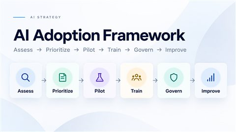

Beyond the Tool: Designing a Practical Framework for Responsible AI Adoption

🧭
A marketing manager uses generative AI to improve a draft. An operations analyst creates an AI-assisted workflow. Another employee discovers a tool that can summarize documents in seconds. Somewhere else, someone quietly uploads company information into an AI service because it is faster than waiting for an approved solution.
None of those moments necessarily feels like an enterprise AI transformation.
Together, they already are one.
That transition interested me.
Once AI begins working its way into everyday processes, the important questions change. The organization is no longer simply asking, What can AI do?
It has to start asking: Which problems should we solve? What information should AI be allowed to use? Who owns the outcome? Where must a human remain involved? How will we know whether something actually worked? And what happens when the technology changes after we deploy it?
Those questions became the starting point for the XiguaFox AI Adoption Framework.
I did not want to create another list of AI tools. I wanted to design a practical operating system for thinking through AI adoption responsibly.
Figure 1

XiguaFox AI Adoption Framework showing six stages: Assess, Prioritize, Pilot, Train, Govern, and Improve.
AI demonstrations are compelling because they collapse complexity.
A prompt goes in. Something impressive comes out.
Organizational adoption is much messier.
A customer-support copilot, for example, might look straightforward until the organization begins asking what information it can retrieve, whether the answer is grounded in approved sources, how hallucinations are detected, when an employee must override it, what gets logged, and who is accountable if bad information reaches a customer.
An internal knowledge assistant raises similar questions.
So does document summarization.
So does workflow automation.
And the more capable AI becomes — particularly as systems gain access to files, APIs, email, databases, or other tools — the more consequential those questions become.
That led me to a central conclusion:
AI adoption is not primarily a tool-selection problem.
It is a product problem, a people problem, an operating-model problem, a measurement problem, and a governance problem.
The framework grew around that idea. Its philosophy treats adoption as a people-centered business transformation designed to strengthen human capability rather than eliminate meaningful human judgment. It emphasizes practical adoption, measurable value, accessibility, accountability, education, and governance that enables useful work rather than creating unnecessary friction.
While designing the framework, I kept returning to a deceptively simple question:
What has to be true before an AI idea deserves to become an AI implementation?
Having an interesting use case is not enough.
A team might have enthusiasm but poor data.
It might have good data but no process owner.
It might have a technically feasible solution but no plan for how employees will actually incorporate it into their work.
Or it might be trying to automate a process that should never be fully automated in the first place.
The framework therefore begins before implementation. A proposed use case needs a defined business problem, an owner, identified users, usable data, an initial value hypothesis, and an acceptable risk profile before it advances. Ideas that need more work can enter Discovery rather than being prematurely approved or rejected.
That distinction matters.
Good AI strategy is not about finding ways to apply AI everywhere. It is about identifying where AI is appropriate — and where it is not.
I organized the framework around six actions:
ASSESS → PRIORITIZE → PILOT → TRAIN → GOVERN → IMPROVE
They are intentionally operational rather than technological.
Before designing a solution, the framework asks whether the underlying environment can support it.
Is the business process understood? Is the data usable and governed? Can existing systems support the proposed workflow? Is the organization prepared for the change?
The readiness assessment scores business-process fit, data quality and access, system constraints, and change impact rather than assuming enthusiasm means preparedness.
This is one of the most useful lessons I took from designing the framework: sometimes the right AI decision is to fix the process first.
Figure 2
Business Process Fit
Data Quality & Access
System Constraints
Change Impact
AI readiness assessment evaluating business process, data, system constraints, and organizational change readiness on a 1–4 scale, with defined remediation thresholds.
Not every business problem needs AI.
And the most technologically interesting opportunity is not automatically the best first use case.
A strong candidate has meaningful value, manageable scope, available data, ownership, measurable outcomes, and risk that can be controlled.
That shifts the conversation from "Where can we use AI?" to "Which problem is worth solving, and is AI actually the right approach?"
That is a much healthier starting point for product decisions.
One principle became especially important to me: reversibility.
The framework recommends beginning with the smallest footprint capable of producing meaningful evidence. Pilots should have clear success metrics, defined users and scope, a rollback trigger, a rollback plan, and an explicit Go / No-Go / Iterate decision.
A good pilot is not simply a smaller launch.
It is a controlled learning mechanism.
Mistakes should be visible. Assumptions should be testable. The organization should be able to stop without creating unnecessary damage.
That is very different from rolling out a new tool because the demo looked promising.
Figure 3
↩ Rollback: a No-Go returns the organization to its current process, not a failed state.
Controlled AI pilot lifecycle with measurement, learning, rollback, and Go, Iterate, or No-Go decisions.
AI creates another measurement challenge: business value and system performance are not the same thing.
A workflow might save time while producing unacceptable errors.
A highly accurate system might be too expensive to operate.
Employees might technically have access to a tool but avoid using it because they do not trust its output.
So the framework separates measurement into three layers:
That can include measures such as adoption, satisfaction, escalation, hallucination rate, corrective feedback, human-review effort, latency, and cost per query.
One of the more interesting issues I explored was automation bias.
Adding a human approval step does not automatically create meaningful oversight. If reviewers begin accepting almost everything, stop challenging recommendations, or become fatigued by repetitive approvals, the human-in-the-loop mechanism can become little more than a checkbox.
The framework therefore proposes monitoring the quality of human review itself — including override rates, corrections, review time, escalations, audit results, and signs of reviewer fatigue.
That changed how I thought about human oversight.
The question is not merely, "Is a human in the loop?"
It is, "Is the human still meaningfully participating in the decision?"
"Augment, don't replace" became more than a slogan in the framework.
It influenced how I approached system design.
High-impact or irreversible decisions need meaningful human checkpoints. Users should understand when AI is involved. Systems should expose uncertainty where appropriate. Critical workflows need manual fallbacks. Sensitive data requires deliberate handling. AI-generated external content needs human review. Agentic systems need defined permissions, boundaries, logs, and approval points.
The same philosophy shaped training.
Giving someone an AI license is not adoption.
People need to understand what the system can do, what it cannot do, what information may be entered, how outputs should be verified, and what to do when something goes wrong.
The framework therefore treats AI literacy as part of implementation, with different levels for general users, power users, builders, and governance leaders.
That is one reason I think AI adoption is fundamentally human-centered.
Technology can change rapidly. Organizational confidence takes longer.
Figure 4
Human-in-the-loop AI workflow where people define intent, AI assists, and a human verifies or overrides the output before action.
Governance is often presented as the part of AI that says no.
I wanted to approach it differently.
Good governance should establish enough clarity that people understand where experimentation is safe.
What data can be used? Which tools are approved? Who can authorize a pilot? Which actions require human approval? How should an employee disclose an AI workflow they have already created?
The framework even treats discovery of existing AI usage as something that should be approached non-punitively where possible, so useful experimentation can be identified, evaluated, and brought into approved practices rather than simply driven underground.
That is especially important because shadow AI is partly a governance issue, but it can also be an enablement signal.
If employees are finding unofficial AI solutions, there may be a real unmet need hiding underneath the risk.
The goal should be to understand both.
One of the biggest differences between ordinary software thinking and AI-system thinking is that the model underneath a workflow may change independently of the organization using it.
Vendors update models. Pricing changes. Prompts evolve. Retrieval sources change. User behavior changes. Models are deprecated. Performance can drift.
That means an AI launch cannot be treated as a finish line.
The framework includes model-version tracking, regression testing after meaningful changes, rollback planning, cost monitoring, incident review, and explicit decisions about whether systems should remain active, be upgraded, migrated, paused, or retired.
That lifecycle perspective became one of my strongest conclusions while building the framework:
responsible AI requires ownership after implementation, not just approval before implementation.
Even without adopting a formal framework, an organization can improve its approach immediately:
The point is not to create paperwork around every experiment.
It is to make deliberate experimentation possible.
Figure 5
AI adoption maturity roadmap progressing from Foundation to Pilot, Expand, and Optimize.
The framework now contains far more than the six-stage model. There are readiness assessments, use-case registers, pilot charters, vendor reviews, system cards, decision logs, risk reviews, monitoring guidance, training levels, incident processes, and lifecycle controls.
But those artifacts are not the real idea.
The real idea is the system connecting them.
AI creates enormous opportunities for organizations to improve how people find information, make decisions, create content, analyze problems, and perform repetitive work.
But access to more capable technology does not remove the need for product thinking.
It makes product thinking more important.
Someone still has to decide what problem matters. Someone has to understand the user. Someone has to define value. Someone has to determine acceptable risk. Someone has to measure the result. And someone has to remain accountable when the system gets something wrong.
That is why I keep coming back to augment, don't replace.
The most useful AI systems should not simply remove humans from work. They should help people perform that work with greater capability while preserving the judgment, accountability, and context that make the work meaningful.
The final line of the framework captures where I eventually landed: it is designed to be adapted rather than treated as a static compliance document. Its purpose is the safe, effective, and lasting integration of AI into the work people actually do.
Good structure does not have to stand in the way of innovation.
It can be what makes innovation sustainable.